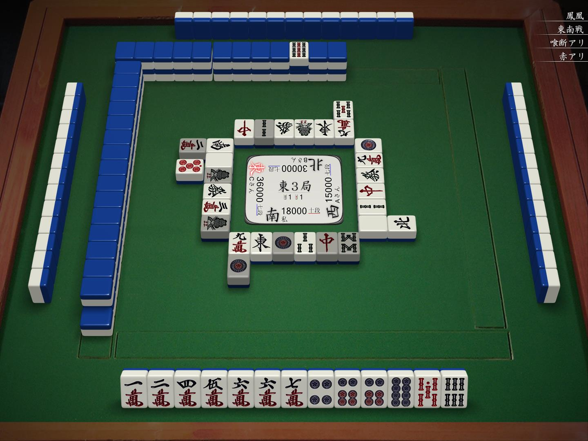
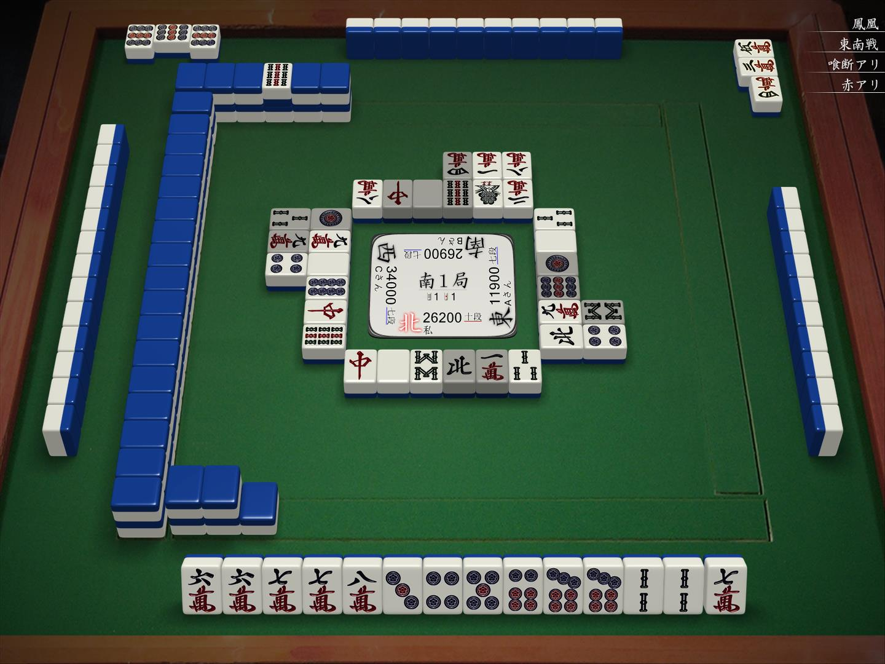

太流牌谱学习笔记（二）
今天又看了一些太くないお的牌谱，发现自己的牌效和攻守判断有不小问题。
两面·顺子⚪单骑

上家打0p，这里太くないお吃了，打1m。
这里1m比打2m略优，因为245667m可以视为一个三面进章的好型，进358m都可以形成两个面子。
之前看《琴南幼儿园笔记本》时，里面也提到了这种牌型，就是“两面·顺子⚪单骑”是一个好型，这里即是一个例子
对子的处理

这里我的第一反应是模切7p，而太くないお则是手切了4m。
这里切4m并不损失5m的进章，保留7p则可以保留做7对的可能性。

后续进到了8m，我的第一反应是切7p/2s固定好型，而太くないお则是切了3s。
这里如果切7p，那么2s就得作雀头，3s实际上是一张没用的牌。而如果切3s，还多了7p和2s的进张。
而根据“双雀头最强”的理论（2ヘッド理論），这里保留7p和2s两个雀头牌效是最高的。

之后又进到了7m，这里切7p比且切7m略好一点。因为这里打掉7p之后，减少了2枚7p的进张，多了67m共3枚进张。另外需要注意的是，这时58p已现4张，虽然还是两面听牌，但已经和愚型听牌差不多了。
防守的意识

2巡前下家碰4s打红中，然后上家碰了中打6m。这里我还在考虑切9p进攻的时候，太くないお直接打了8p防守。
仔细想一下，已经到了中盘，下家断幺副露后切了字牌，之后一直模切，应该有50%的概率听牌，至少也是一向听。上家也是类似的情况。而这里自家的手牌还是2个愚型的3向听，因此这里的确应该考虑弃胡了。
实际上，这里下家是断幺Dora2的一向听，而上家已经是中Dora2听牌。
总结
从自己打牌的经历来看，对于防守的判断还停留在有人立直才防守的层面上，对于其他情况，比如副露的防守还不是很有意识。
另外，当自己的牌不好的时候，就应该提前考虑弃胡，而不是强行进攻，这点在之后打牌的时候务必要注意。
相关文章